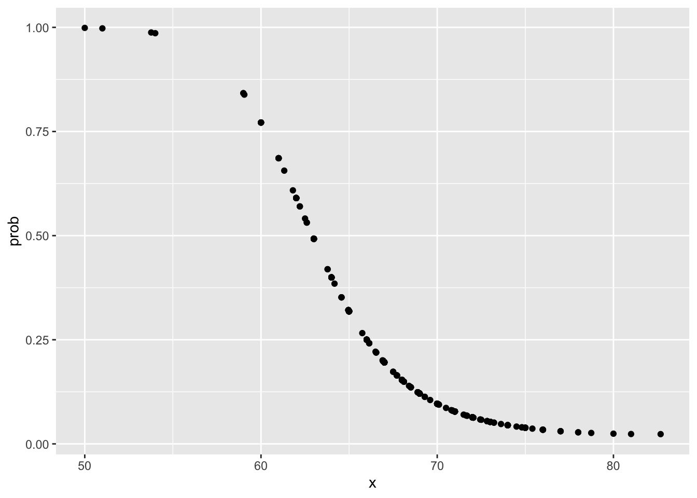
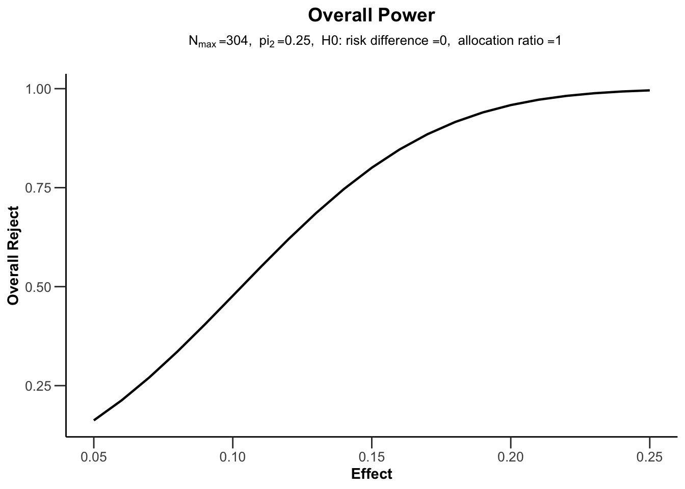

Chapter 25 Group (Adaptive) Sequential Design
25.1 Classical Designs without futility stopping
The design of many clinical trials includes some strategy for early stopping if an interim analysis reveals large differences between treatment groups, or shows obvious futility such that there is no chance that continuing to the end would show a clinically meaningful effect. In addition to saving time and resources, such a design feature can reduce study participants’ exposure to an inferior or useless treatment. However, when repeated significance testing on accumulating data is done, some adjustment of the usual hypothesis testing procedure must be made to maintain an overall significance level. The methods described by Pocock and O’Brien & Fleming, among others, are popular implementations of group sequential testing for clinical trials.
25.1.1 Pocock Method
The Pocock boundary is a method for determining whether to stop a clinical trial prematurely. The typical clinical trial compares two groups of patients. One group are given a placebo or conventional treatment, while the other group of patients are given the treatment that is being tested. The investigators running the clinical trial will wish to stop the trial early for ethical reasons if the treatment group clearly shows evidence of benefit. In other words, “when early results proved so promising it was no longer fair to keep patients on the older drugs for comparison, without giving them the opportunity to change.”
The Pocock boundary is simple to use in that the p-value threshold is the same at each interim analysis. The disadvantages are that the number of interim analyses must be fixed at the start and it is not possible under this scheme to add analyses after the trial has started. Another disadvantage is that investigators and readers frequently do not understand how the p-values are reported: for example, if there are five interim analyses planned, but the trial is stopped after the third interim analysis because the p-value was 0.01, then the overall p-value for the trial is still reported as <0.05 and not as 0.01.
With the Pocock design early rejections are more likely.
25.1.2 O’Brien & Fleming Method
Pocock (1977) first proposed that the crossing boundary be constant for all equally spaced analyses. O’Brien and Fleming \((1979)\) suggested that the crossing boundaries for the kth analysis, \(z_{c}(k)\), be changed over the total number of analyses \(\mathrm{K}\) such that
\[ z_{c}(k)=z_{O B F} \sqrt{K / k} \] The O’Brien-Fleming boundaries have been used more frequently because they preserve a nominal significance level at the final analysis that is close to that of a single test procedure.
With the O’Brien & Fleming design the early rejection bounds are large and early rejections are rather unlikely, at least under \(\mathrm{H} _0\). With the O’Brien& Fleming design the last rejection bound is close to the un-adjusted bound \(Z_{\alpha / 2}\). This is not the case for Pocock’s design. In practice, the O’Brien & Fleming design is generally preferred, since early rejection without overwhelming evidence may not be convincing.
25.1.3 Wang & Tsiatis Method
Wang & Tsiatis (1987) suggest the rejection boundaries
\[ u_{k}=\mathrm{c}_{\mathrm{WT}}(K, \alpha, \beta, \Delta) k^{\Delta-0.5} \]
- For \(\Delta=0\) we obtain the O’Brien & Fleming boundaries.
- For \(\Delta=0.5\) we obtain Pocock’s boundaries
- For \(0<\Delta<0.5\) we obtain a compromise between \(\mathrm{P}\) and OBF.
25.1.4 Rejection bounds and Local p-values
Rejection bounds
Rejection regions with rejection bounds \(u_{k}, k=1, \ldots, K\).
\[
\begin{array}{c}
\mathcal{R}_{k}^{*}=\left\{\left|Z_{k}^{*}\right| \geq u_{k}\right\}=\left(-\infty,-u_{k}\right) \cup\left(u_{k}, \infty\right) \\
\mathcal{A}_{k}^{*}=\emptyset, \mathcal{C}_{k}^{*}=\left(-u_{k}, u_{k}\right) \text { for } k<K, \text { and } \mathcal{A}_{K}^{*}=\left(-u_{K}, u_{K}\right)
\end{array}
\]
Design of Pocock (1977): Constant rejection bounds, i.e.
\[u_{1}=\cdots=u_{K}=c_{\mathrm{P}} \text{with} c P=c P(K, \alpha)\] such that
\[\mathbf{P}_{\mu_{0}}\left(\bigcup_{k=1}^{K}\left\{\left|Z_{k}^{*}\right| \geq c_{P}\right\}\right)=\alpha\]
Design of O’Brien & Fleming (1979): Decreasing rejection bounds with \(u_{k}=c_{\mathrm{OBF}} / \sqrt{k}\) with \(c \mathrm{OBF}=c \mathrm{OBF}(K, \alpha)\)
\[\mathbf{P}_{\mu_{0}}\left(\bigcup_{k=1}^{K}\left\{\left|Z_{k}^{*}\right| \geq C_{\mathrm{OBF}} / \sqrt{k}\right\}\right)=\alpha\]
Local p-values
\[ \begin{array}{c} p_{k}^{*}:=2\left(1-\Phi\left(\left|Z_{k}^{*}\right|\right)\right), \quad k=1, \ldots, K \\ \text { Namely: } \quad\left|Z_{k}^{*}\right| \geq u_{k} \quad \Longleftrightarrow \quad p_{k}^{*} \leq \alpha_{k}:=2\left(1-\Phi\left(u_{k}\right)\right) \end{array} \]
- Constant local levels in the Pocock design: \[\alpha_{1}=\cdots=\alpha_{K}=2\left(1-\Phi\left(C_{\mathrm{P}}\right)\right)\]
- Decreasing local levels of the O’Brien & Fleming design: \[\alpha_{k}=2\left(1-\Phi\left(c_{\mathrm{OBF}} / \sqrt{k}\right)\right), \quad k=1, \ldots, K\]
25.1.5 Power and Sample size
As argued before, the maximum sample size \(N_{K}\) required for power \(1-\beta\) is a multiple of the fixed size \[ \begin{array}{l} n_{f}=\left(z_{\alpha / 2}+z_{\beta}\right)^{2} / \delta_{1}^{2} \\ N_{K}=n_{f} \cdot I(K, \alpha, \beta) \end{array} \] The inflation factor \(I(K, \alpha, \beta)\) depends on the type of design, e.g. whether Pocock or O’Brien & Fleming.
Average Sample Size
The required stage-wise sample size is \[n=N_{K} / K=n_{f} \cdot I(K, \alpha, \beta) / K\] Consequently, we get for the ASN \[\frac{\operatorname{ASN}(\mu)}{n_{f}}=\frac{I(K, \alpha, \beta)}{K} \underbrace{\left(1+\sum_{k=2}^{K} \mathbf{P}_{\vartheta_{1}}\left(Z_{1}^{*} \in \mathcal{C}_{1}^{*}, \ldots, Z_{k-1}^{*} \in \mathcal{C}_{k-1}^{*}\right)\right)}_{\text {average number of stages }}\]
25.2 Classical Designs with binding futility stopping
25.2.1 Symmetric designs
Pampallona & Tsiatis (1994) suggest to use a GSD with a symmetric interim acceptance region: \[ \mathcal{A}_{k}^{*}=\left[-u_{k k}^{0}, u_{k}^{0}\right], \quad \mathcal{C}_{k}^{*}=\left(-u_{k}^{1},-u_{k}^{0}\right) \cup\left(u_{k}^{0}, u_{k}^{1}\right), \quad k=1, \ldots, K \] for specific \(0<u_{k}^{0}<u_{k}^{1}(k<K)\) and \(0<u_{K}^{0}=u_{K}^{1}\) This means to accept \(H_{0}\) at stage k if \(|Z k| \leq u k^{0}\), and to reject \(H_{0}\) at stage k if \(\left|Z_{k}\right| \geq u_{k}^{1}\)
The method can be implemented by using the acceptance bounds \[ u_{k}^{0}:=\max (\underbrace{\left[\sqrt{k / K}\left(c^{0}+c^{1}\right)-c^{0}\right] K^{\Delta-0.5}}_{\text {the original } u_{k}^{0}}, 0) \]
25.2.2 One-Sided Designs
Without early acceptance we would now choose: \[ \begin{array}{c} \mathcal{C}_{k}^{*}=\left(-\infty, u_{k}\right), \quad \mathcal{A}_{k}^{*}=\emptyset, \quad k=1, \ldots, K-1 \\ \mathcal{R}_{k}^{*}=\left[u_{k}, \infty\right), \quad k=1, \ldots, K, \quad \mathcal{A}_{K}^{*}=\left(-\infty, u_{K}\right) \end{array} \] Type I error rate control: \[ \mathbf{P}_{\mu_{0}}\left(\bigcup_{k=1}^{K}\left\{Z_{k}^{*} \geq u_{k}\right\}\right)=\alpha \] One-sided GSD with early acceptance: DeMets & Ware \((1980,1982)\) suggest to use a constant futility boundary \(u^{L}<u_{k}\) for all \(k \leq K-1\), With this futility boundary the decision regions become \[ \begin{array}{c} \mathcal{C}_{k}^{*}=\left(u^{L}, u_{k}\right), \quad \mathcal{A}_{k}^{*}=\left(-\infty, u^{L}\right), \quad k=1, \ldots, K-1 \\ \mathcal{R}_{k}^{*}=\left(u_{k}, \infty\right), \quad k=1, \ldots, K, \quad \mathcal{A}_{K}^{*}=\left(-\infty, u_{K}\right) \end{array} \]
25.3 Alpha Spending Function Approach
GSD with unequally sized stages
Assume that we have planned the GSD with equally spaced stages, but the stage-wise sample sizes \(n_k\) are unequal. We can calculate all boundaries (e.g. Pocock or O’Brien & Fleming) also with unequal stages.
如果只是为了控制假阳性，可以将提前比较视为多次比较，使用多重检验方法进行校正。但是实验中数据相关性较强，多重校正会增大假阴性错误，并不合适。alpha消耗函数的思路是将假阳性错误按照某种方案分配给每次比较，每次比较消耗一定的假阳性配额，合计后刚好等于预设水平。 当某个临床研究分若干阶段进行整体决策时（如基于有效性或无效性所做的期中分析），每个阶段都要消耗一定的α，随着研究进展，研究所完成的比例（如1/3、1/2、60%等）与累积的I类错误率呈现某种函数关系. 每次消耗为 \[ \alpha_{1}^{*}=\alpha\left(t_{1}^{*}\right)-\alpha(0),\] \[\alpha_{2}^{*}=\alpha\left(t_{2}^{*}\right)-\alpha\left(t_{1}^{*}\right), \ldots,\] \[\alpha_{n}^{*}=\alpha(1)-\alpha\left(t_{n-1}^{*}\right)\] 根据定义可知\(\alpha_{1}^{*}=\alpha\left(t_{1}^{*}\right), \sum \alpha^{*}=\alpha,\)
It is usually difficult or even impossible to achieve the pre-planned sample sizes perfectly. One reason is that we need to fix a date for the DMC to meet. So solve this issue, Lan & DeMets suggest to fix the maximum sample size \(\mathrm{N}\) and a “spending function at level” \(\alpha^{*}(t), \quad t \in[0,1]\) that is strictly increasing with \(\alpha(0)=0\) and \(\alpha(1)=\alpha\)
- In the 1 st interim analysis (IA) calculate \(t_{1}=n_{1} / \mathrm{N}\) and \(u_{1}, \mathrm{~s}\).th. \(\mathbf{P}\left(\left|Z_{1}^{*}\right| \geq u_{1}\right)=\alpha^{*}\left(t_{1}\right)\)
- In the 2nd IA we calculate \(t_{2}=\left(n_{1}+n_{2}\right) / N\) and \(u_{2}, \mathrm{~s}\).th. \(\alpha_{1}^{*}\left(t_{1}\right)+\mathbf{P}\left(\left|Z_{1}^{*}\right|<u_{1},\left|Z_{2}^{*}\right| \geq u_{2}\right)=\alpha^{*}\left(t_{2}\right)\)
- In the \(k^{\text {th }}\) IA calculate \(t k=(n 1+\cdots+n k) / N\) and \(u_{k}\)
\[ \alpha^{*}\left(t_{k-1}\right)+\mathbf{P}\left(\left|Z_{1}^{*}\right|<u_{1}, \ldots,\left|Z_{k-1}^{*}\right|<u_{k-1},\left|Z_{k}^{*}\right| \geq u_{k}\right)=\alpha^{*}\left(t_{k}\right) \] This means to use the level \(\alpha^{*}\left(t_{k}\right)\) up to stage \(k\)
Examples for spending functions
- To mimic Pocock’s design (Lan & DeMets, 1983): \(\alpha_{1}^{*}(t)=\alpha \log (1+(e-1) t), \quad t \in[0,1]\)
- To mimic the O’Brien & Fleming design (Lan & DeMets, 1983): \(\alpha_{2}^{*}(t)=\left\{\begin{array}{l}4\left\{1-\phi^{-1}\left[\Phi(1-\alpha / 4) / \sqrt{t_{k}}\right]\right\} \\ 4\left\{1-\phi^{-1}\left[\Phi(1-\alpha / 2) / \sqrt{t_{k}}\right]\right\} & \begin{array}{l}\text { one-sided } \\ \text { two-sided }\end{array}\end{array}\right.\)
- Spending function family of Kim & DeMets (1987) \(\alpha_{3}^{*}(\rho, t)=\alpha t^{\rho}, \quad t \in[0,1], \quad\) for some \(\rho>0\)
25.4 R Implementation using rpact
R Package for Adaptive Clinical Trials
25.4.1 Basic Functions
Design Functions
- getDesignGroupSequential()
- getDesignInverseNormal()
- getDesignFisher()
- getDesignCharacteristics()
Sample Size Calculation Functions
- getSampleSizeMeans()
- getSampleSizeRates()
- getSampleSizeSurvival()
Power Calculation Functions
- getPowerMeans()
- getPowerRates()
- getPowerSurvival()
Simulation Functions
- getSimulationMeans()
- getSimulationRates()
- getSimulationSurvival()
- getSimulationMultiArmMeans()
- getSimulationMultiArmRates()
- getSimulationMultiArmSurvival()
Dataset and Analysis Results Functions
- getDataset()
- getAnalysisResults()
- getStageResults()
25.4.2 getDesignGroupSequential defining efficacy boundaries
typeOfDesign = c("OF", "P", "WT", "HP", "WToptimum",
"asP", "asOF", "asKD", "asHSD", "asUser")library(rpact)
## Standard O’Brien & Fleming boundary
design <- getDesignGroupSequential(sided = 1, alpha = 0.025,
informationRates = c(0.33, 0.67, 1), typeOfDesign = "OF")
## User-defined α-spending functions
## User-defined αα-spending functions (typeOfDesign = "asUser") can be obtained via the argument userAlphaSpending which must contain a numeric vector with elements 0<α1<…<αkMax=α0<α1<…<αkMax=α that define the values of the cumulative alpha-spending function at each interim analysis.
## Example: User-defined alpha-spending function which is very conservative at first interim (spend alpha = 0.001), conservative at second (spend an additional alpha = 0.01, i.e., total cumulative alpha spent is 0.011 up to second interim), and spends the remaining alpha at the final analysis (i.e., cumulative alpha = 0.025)
design <- getDesignGroupSequential(sided = 1, alpha = 0.025,
informationRates = c(0.33, 0.67, 1),
typeOfDesign = "asUser",
userAlphaSpending = c(0.001, 0.01 + 0.001, 0.025))
## O’Brien & Fleming type α-spending
design <- getDesignGroupSequential(sided = 1, alpha = 0.025,
informationRates = c(0.33, 0.67, 1),
typeOfDesign = "asOF")
# plot the design with default type 1 (Boundary Plot)
plot(design)
### plot.TrialDesign
### 1: creates a 'Boundaries' plot
### 3: creates a 'Stage Levels' plot
### 4: creates a 'Error Spending' plot
### 5: creates a 'Power and Early Stopping' plot
### 6: creates an 'Average Sample Size and Power / Early Stop' plot
### 7: creates an 'Power' plot
### 8: creates an 'Early Stopping' plot
### 9: creates an 'Average Sample Size' plot
### "all": creates all available plots and returns it as a grid plot or list
# summary() creates a nice presentation of the design:
summary(design)## Sequential analysis with a maximum of 3 looks (group sequential design)
##
## O'Brien & Fleming type alpha spending design, one-sided local
## significance level 2.5%, power 80%, undefined endpoint.
##
## Stage 1 2 3
## Information rate 33% 67% 100%
## Efficacy boundary (z-value scale) 3.731 2.504 1.994
## Cumulative alpha spent <0.0001 0.0062 0.0250
## One-sided local significance level <0.0001 0.0061 0.0231# display the design characteristics
# Stopping probabilities and expected sample size reduction
getDesignCharacteristics(design)## Group sequential design characteristics:
## Number of subjects fixed : 7.849
## Shift : 7.9510
## Inflation factor : 1.0130
## Informations : 2.624, 5.327, 7.951
## Power : 0.01739, 0.42271, 0.80000
## Rejection probabilities : 0.01739, 0.40532, 0.37729
## Futility probabilities : 0, 0
## Ratio expected vs fixed sample size under H1 : 0.8657
## Ratio expected vs fixed sample size under a value between H0 and H1 : 0.9827
## Ratio expected vs fixed sample size under H0 : 1.0109### Comparison of multiple designs
# O'Brien & Fleming, 3 equally spaced stages
d1 <- getDesignGroupSequential(typeOfDesign = "OF", kMax = 3)
# Pocock
d2 <- getDesignGroupSequential(typeOfDesign = "P", kMax = 3)
designSet <- getDesignSet(designs = c(d1, d2), variedParameters = "typeOfDesign")
plot(designSet, type = 1)
### futilityBounds defining futility boundaries
- A futility bound of z=0 corresponds to an estimated treatment effect of zero or “null,” i.e., in this case futility stopping is recommended if the treatment effect estimate at the interim analysis is zero or “goes in the wrong direction.”
- utility bounds of z=−∞ (which are numerically equivalent to z=−6) correspond to no futility stopping at an interim.
## Example: non-binding futility boundary at each interim in case
## estimated treatment effect is null or goes in "the wrong direction"
## See Futility boundary (z-value scale)
design <- getDesignGroupSequential(sided = 1, alpha = 0.025,
informationRates = c(0.33, 0.67, 1), typeOfDesign = "asOF",
futilityBounds = c(0,0), bindingFutility = FALSE)
summary(design)## Sequential analysis with a maximum of 3 looks (group sequential design)
##
## O'Brien & Fleming type alpha spending design, non-binding futility, one-sided local
## significance level 2.5%, power 80%, undefined endpoint.
##
## Stage 1 2 3
## Information rate 33% 67% 100%
## Efficacy boundary (z-value scale) 3.731 2.504 1.994
## Futility boundary (z-value scale) 0 0
## Cumulative alpha spent <0.0001 0.0062 0.0250
## One-sided local significance level <0.0001 0.0061 0.023125.5 Sample Size
25.5.1 Sample Sizes for Different Types of Endpoints without IA
(#fig:Sample_Size_Without_IA)Figure: Sample Sizes for Different Types of Endpoints without IA
25.5.2 Two groups continuous endpoint (without IA)
### without interim analyses witrh equal sample size of 2 arms
### Assumption: Targeted mean difference is >0 under the alternative hypothesis
# Example of a standard trial:
# - targeted mean difference is 10 (alternative = 10)
# - standard deviation in both arms is assumed to be 24 (stDev = 24)
# - two-sided test (sided = 2), Type I error 0.05 (alpha = 0.05) and power 80%
# - (beta = 0.2)
sampleSizeResult <- getSampleSizeMeans(alternative = 10, stDev = 24, sided = 2,
alpha = 0.05, beta = 0.2)
## sampleSizeResult
summary(sampleSizeResult)## Sample size calculation for a continuous endpoint
##
## Fixed sample analysis.
## The sample size was calculated for a two-sample t-test (two-sided),
## H0: mu(1) - mu(2) = 0, H1: effect = 10, standard deviation = 24, power 80%.
##
## Stage Fixed
## Efficacy boundary (z-value scale) 1.960
## Number of subjects 182.8
## Two-sided local significance level 0.0500
## Lower efficacy boundary (t) -7.006
## Upper efficacy boundary (t) 7.006
##
## Legend:
## (t): treatment effect scale### Unequal randomization between the treatment groups
# - 2(intervention):1(control) randomization (allocationRatioPlanned = 2)
summary(getSampleSizeMeans(alternative = 10, stDev = 24,
allocationRatioPlanned = 2, sided = 2, alpha = 0.05, beta = 0.2))## Sample size calculation for a continuous endpoint
##
## Fixed sample analysis.
## The sample size was calculated for a two-sample t-test (two-sided),
## H0: mu(1) - mu(2) = 0, H1: effect = 10, standard deviation = 24,
## planned allocation ratio = 2, power 80%.
##
## Stage Fixed
## Efficacy boundary (z-value scale) 1.960
## Number of subjects 205.4
## Two-sided local significance level 0.0500
## Lower efficacy boundary (t) -7.004
## Upper efficacy boundary (t) 7.004
##
## Legend:
## (t): treatment effect scale### Calculate power for the 2:1 rendomized trial with total sample size 206
### (as above) assuming a larger difference of 12
powerResult <- getPowerMeans(alternative = 12, stDev = 24, sided = 2,
allocationRatioPlanned = 2, maxNumberOfSubjects = 206, alpha = 0.05)
summary(powerResult)## Power calculation for a continuous endpoint
##
## Fixed sample analysis.
## The results were calculated for a two-sample t-test (two-sided),
## H0: mu(1) - mu(2) = 0, H1: effect = 12, standard deviation = 24,
## planned allocation ratio = 2.
##
## Stage Fixed
## Efficacy boundary (z-value scale) 1.960
## Power 0.9203
## Number of subjects 206.0
## Two-sided local significance level 0.0500
## Lower efficacy boundary (t) -6.994
## Upper efficacy boundary (t) 6.994
##
## Legend:
## (t): treatment effect scale### Two groups continuous endpoint (non-inferiority)
### Plpot the overall power
# Example: Calculate power for design with sample size 206 as above
# alternative values ranging from 5 to 15
powerResult <- getPowerMeans(alternative = 5:15, stDev = 24, sided = 2,
allocationRatioPlanned = 2, maxNumberOfSubjects = 206, alpha = 0.05)
plot(powerResult,type = 7) # one of several possible plots
# - One-sided alpha = 0.05, 1:1 randomization
# - H0: treatment difference <= -12 (i.e., = -12 for calculations, thetaH0 = -1)
# vs. alternative H1: treatment difference = 0 (alternative = 0)
sampleSizeNoninf <- getSampleSizeMeans(thetaH0 = -12,alternative = 0,
stDev = 14,alpha = 0.025,beta = 0.2,sided = 1)
sampleSizeNoninf## Design plan parameters and output for means:
##
## Design parameters:
## Critical values : 1.96
## Significance level : 0.0250
## Type II error rate : 0.2000
## Test : one-sided
##
## User defined parameters:
## Theta H0 : -12
## Alternatives : 0
## Standard deviation : 14
##
## Default parameters:
## Normal approximation : FALSE
## Mean ratio : FALSE
## Treatment groups : 2
## Planned allocation ratio : 1
##
## Sample size and output:
## Number of subjects fixed : 44.737
## Number of subjects fixed (1) : 22.369
## Number of subjects fixed (2) : 22.369
## Critical values (treatment effect scale) : -3.556
##
## Legend:
## (i): values of treatment arm i25.5.3 Two groups binary endpoint (without IA)
# - probability 25% in control (pi2 = 0.25) vs 40% (pi1 = 0.4) in intervention
# - one-sided test (sided = 1)
# - Type I error 0.025 (alpha = 0.025) and power 80% (beta = 0.2)
sampleSizeResult <- getSampleSizeRates(pi2 = 0.25, pi1 = 0.4,
sided = 1, alpha = 0.025, beta = 0.2)
summary(sampleSizeResult)## Sample size calculation for a binary endpoint
##
## Fixed sample analysis.
## The sample size was calculated for a two-sample test for rates (one-sided),
## H0: pi(1) - pi(2) = 0, H1; treatment rate pi(1) = 0.4, control rate pi(2) = 0.25,
## power 80%.
##
## Stage Fixed
## Efficacy boundary (z-value scale) 1.960
## Number of subjects 303.7
## One-sided local significance level 0.0250
## Efficacy boundary (t) 0.103
##
## Legend:
## (t): approximate treatment effect scale# Example: Calculate power for a simple trial with total sample size 304
# as in the example above in case of pi2 = 0.25 (control) and
# pi1 = 0.37 (intervention)
powerResult <- getPowerRates(pi2 = 0.25, pi1 = 0.37, allocationRatioPlanned = 2,
maxNumberOfSubjects = 304, sided = 1,alpha = 0.025)
summary(powerResult)## Power calculation for a binary endpoint
##
## Fixed sample analysis.
## The results were calculated for a two-sample test for rates (one-sided),
## H0: pi(1) - pi(2) = 0, power directed towards larger values,
## H1; treatment rate pi(1) = 0.37, control rate pi(2) = 0.25,
## planned allocation ratio = 2.
##
## Stage Fixed
## Efficacy boundary (z-value scale) 1.960
## Power 0.5571
## Number of subjects 304.0
## One-sided local significance level 0.0250
## Efficacy boundary (t) 0.112
##
## Legend:
## (t): approximate treatment effect scale# Example: Calculate power for simple design (with sample size 304 as above)
# for probabilities in intervention ranging from 0.3 to 0.5
powerResult <- getPowerRates(pi2 = 0.25,pi1 = seq(0.3,0.5,by = 0.01),
maxNumberOfSubjects = 304,sided = 1,alpha = 0.025)
# one of several possible plots, this one plotting true effect size vs power
plot(powerResult,type = 7) 
### for a single arm trial without interim analyses
# Example: Sample size for a single arm trial which tests
# H0: pi = 0.1 vs. H1: pi = 0.25
# (use conservative exact binomial calculation)
samplesSizeResults <- getSampleSizeRates(groups = 1, thetaH0 = 0.1, pi1 = 0.25,
normalApproximation = FALSE, sided = 1, alpha = 0.025, beta = 0.2)
summary(samplesSizeResults)## Sample size calculation for a binary endpoint
##
## Fixed sample analysis.
## The sample size was calculated for a one-sample test for rates (one-sided),
## H0: pi = 0.1, H1: treatment rate pi = 0.25, power 80%.
##
## Stage Fixed
## Efficacy boundary (z-value scale) 1.960
## Number of subjects 53.0
## One-sided local significance level 0.0250
## Efficacy boundary (t) 0.181
##
## Legend:
## (t): treatment effect scale25.5.4 Group-sequential designs for conti and binary
Sample size calculation for a group-sequential trials is performed in two steps:
- Define the (abstract) group-sequential design using the function getDesignGroupSequential(). For details regarding this step, see the R markdown file “Defining group-sequential boundaries with rpact.”
- Calculate sample size for the continuous endpoint by feeding the abstract design into the function getSampleSizeMeans().
# Example: Group-sequential design with O'Brien & Fleming type alpha-spending
# and one interim at 60% information
design <- getDesignGroupSequential(sided = 1, alpha = 0.025, beta = 0.2,
informationRates = c(0.6,1), typeOfDesign = "asOF")
# Trial assumes an effect size of 10 as above, a stDev = 24, and an allocation
# ratio of 2
sampleSizeResultGS <- getSampleSizeMeans(
design, alternative = 10, stDev = 24, allocationRatioPlanned = 2)
# Standard rpact output (sample size object only, not design object)
summary(sampleSizeResultGS)## Sample size calculation for a continuous endpoint
##
## Sequential analysis with a maximum of 2 looks (group sequential design).
## The sample size was calculated for a two-sample t-test (one-sided),
## H0: mu(1) - mu(2) = 0, H1: effect = 10, standard deviation = 24,
## planned allocation ratio = 2, power 80%.
##
## Stage 1 2
## Information rate 60% 100%
## Efficacy boundary (z-value scale) 2.669 1.981
## Overall power 0.3123 0.8000
## Number of subjects 124.3 207.1
## Cumulative alpha spent 0.0038 0.0250
## One-sided local significance level 0.0038 0.0238
## Efficacy boundary (t) 12.393 7.050
##
## Legend:
## (t): treatment effect scale# Example: Group-sequential design with O'Brien & Fleming type alpha-spending and
# one interim at 60% information
design <- getDesignGroupSequential(sided = 1, alpha = 0.025, beta = 0.2,
informationRates = c(0.6, 1), typeOfDesign = "asOF")
# Sample size calculation assuming event probabilities are 25% in control
# (pi2 = 0.25) vs 40% (pi1 = 0.4) in intervention
sampleSizeResultGS <- getSampleSizeRates(design,pi2 = 0.25,pi1 = 0.4)
# Standard rpact output (sample size object only, not design object)
sampleSizeResultGS## Design plan parameters and output for rates:
##
## Design parameters:
## Information rates : 0.600, 1.000
## Critical values : 2.669, 1.981
## Futility bounds (non-binding) : -Inf
## Cumulative alpha spending : 0.003808, 0.025000
## Local one-sided significance levels : 0.003808, 0.023798
## Significance level : 0.0250
## Type II error rate : 0.2000
## Test : one-sided
##
## User defined parameters:
## pi(1) : 0.400
## pi(2) : 0.250
##
## Default parameters:
## Normal approximation : TRUE
## Risk ratio : FALSE
## Theta H0 : 0
## Treatment groups : 2
## Planned allocation ratio : 1
##
## Sample size and output:
## Direction upper : TRUE
## Information rates [1] : 0.600
## Information rates [2] : 1.000
## Maximum number of subjects : 306.3
## Maximum number of subjects (1) : 153.2
## Maximum number of subjects (2) : 153.2
## Number of subjects [1] : 183.8
## Number of subjects [2] : 306.3
## Expected number of subjects under H0 : 305.9
## Expected number of subjects under H0/H1 : 299.3
## Expected number of subjects under H1 : 268.1
## Reject per stage [1] : 0.3123
## Reject per stage [2] : 0.4877
## Early stop : 0.3123
## Critical values (treatment effect scale) [1] : 0.187
## Critical values (treatment effect scale) [2] : 0.104
##
## Legend:
## (i): values of treatment arm i
## [k]: values at stage k25.5.5 Survival endpoint
The relevant rpact functions for survival are:
getPowerSurvival(): This function is the analogue to getSampleSizeSurvival() for the calculation of power rather than the sample size.getEventProbabilities(): Calculates the probability of an event depending on the time and type of accrual, follow-up time, and survival distribution. This is useful for aligning interim analyses for different time-to-event endpoints.getSimulationSurvival(): This function simulates group-sequential trials. For example, it allows to assess the power of trials with delayed treatment effects or to assess the data-dependent variability of the timing of interim analyses even if the protocol assumptions are perfectly fulfilled. It also allows to simulate hypothetical datasets for trials stopped early.
25.5.5.1 Specifying survival distributions
Exponential survival distributions
- Event probability at a specific time point known
eventTime = 24, pi2 = 0.3, pi1 = 0.2 - Exponential parameter \(\lambda\) known
- Median survival known \(\lambda = \log(2)/\text{median}\)
Weibull survival distributions
Additional scale parameter kappa needs to be provided which is 1 for the exponential distribution.
25.5.5.2 Without interim analyses
Exponential survival, flexible accrual intensity, no interim analyses
- Exponential PFS with a median PFS of 60 months in control (lambda2 = log(2)/60) and a target hazard ratio of 0.74 (hazardRatio = 0.74).
- Log-rank test at the two-sided 5%-significance level (sided = 2, alpha = 0.05), power 80% (beta = 0.2).
- Annual drop-out of 2.5% in both arms (dropoutRate1 = 0.025, dropoutRate2 = 0.025, dropoutTime = 12).
- Recruitment is 42 patients/month from month 6 onwards after linear ramp up. (accrualTime = c(0,1,2,3,4,5,6), accrualIntensity = c(6,12,18,24,30,36,42))
- Randomization ratio 1:1 (allocationRatioPlanned = 1). This is the default and is thus not explicitly set in the function call below.
- Two sample size choices will be initially explored:
- A fixed total sample size of 1200 (maxNumberOfSubjects = 1200).
- Alternatively, the total sample size will be implicitly determined by specifying that every subject must have a minimal follow-up duration of at 12 months at the time of the analysis (followUpTime = 12).
sampleSize1 <- getSampleSizeSurvival(sided = 2,alpha = 0.05,beta = 0.2,
lambda2 = log(2)/60,hazardRatio = 0.74,
dropoutRate1 = 0.025, dropoutRate2 = 0.025, dropoutTime = 12,
accrualTime = c(0,1,2,3,4,5,6),
accrualIntensity = c(6,12,18,24,30,36,42),
maxNumberOfSubjects = 1200)
summary(sampleSize1)## Sample size calculation for a survival endpoint
##
## Fixed sample analysis.
## The sample size was calculated for a two-sample logrank test (two-sided),
## H0: hazard ratio = 1, H1: hazard ratio = 0.74, control lambda(2) = 0.012, power 80%.
##
## Stage Fixed
## Efficacy boundary (z-value scale) 1.960
## Number of subjects 1200.0
## Number of events 347
## Analysis time 53.1
## Expected study duration 53.1
## Two-sided local significance level 0.0500
## Lower efficacy boundary (t) 1.234
## Upper efficacy boundary (t) 0.810
##
## Legend:
## (t): approximate treatment effect scale